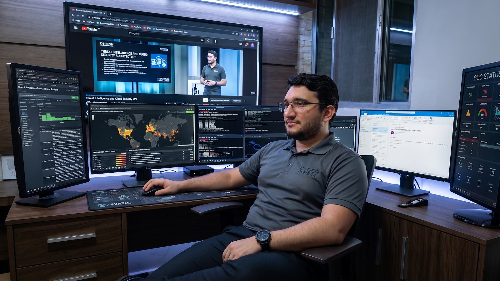
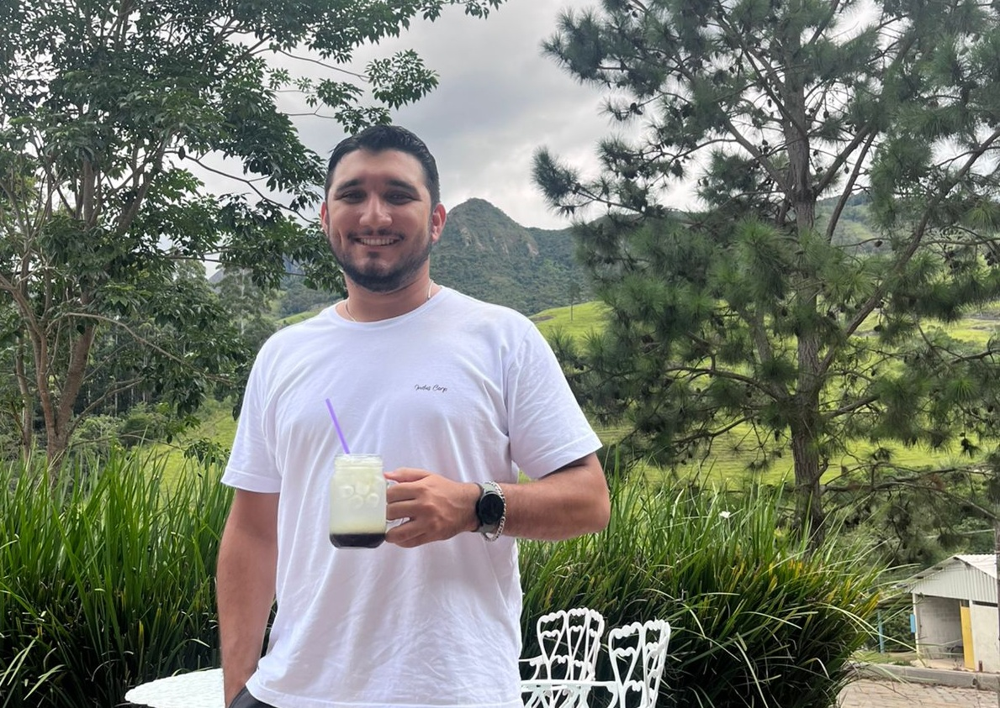

CIBERSEGURIDAD
Monitorización de amenazas en tiempo real
Operaciones de seguridad, análisis de eventos y respuesta a incidentes en entornos críticos.
Ver proyectos
CIBERSEGURIDAD
Operaciones de seguridad, análisis de eventos y respuesta a incidentes en entornos críticos.
Ver proyectos
Tengo aproximadamente cinco años de experiencia en actividades relacionadas con GRC, desarrolladas a lo largo de mi trabajo en infraestructura, seguridad de redes y ciberseguridad en entornos corporativos y MSSP. Mi experiencia incluye la aplicación de controles de seguridad, adaptación a requisitos de clientes, cumplimiento de ISO 27001/27002 y LGPD, implementación de políticas de seguridad, análisis y mitigación de riesgos, cumplimiento de SLA y participación en proyectos de mejora y cumplimiento normativo.
ISH Tecnologia (entorno SEFAZ)
Trabajo dedicado al entorno SEFAZ, contribuyendo a la seguridad de aplicaciones, infraestructura y servicios; monitorización de API, servidores y entornos de contenedores (Harpia SIEM, Microsoft Sentinel, SentinelOne); investigación y respuesta a incidentes; microsegmentación con Illumio; administración de políticas con Check Point; y análisis de vulnerabilidades basados en OWASP.
Diseñé y desarrollé un escáner de vulnerabilidades web personalizado, enfocado en identificar las principales amenazas...